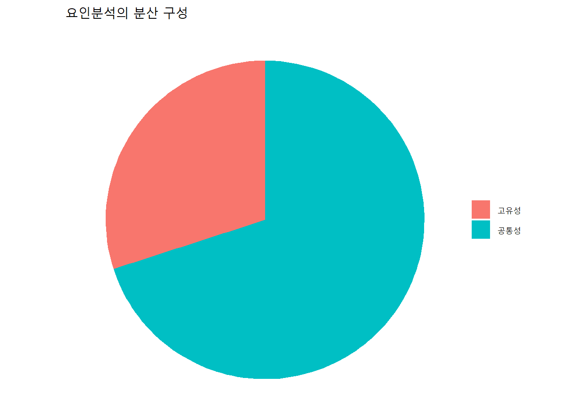
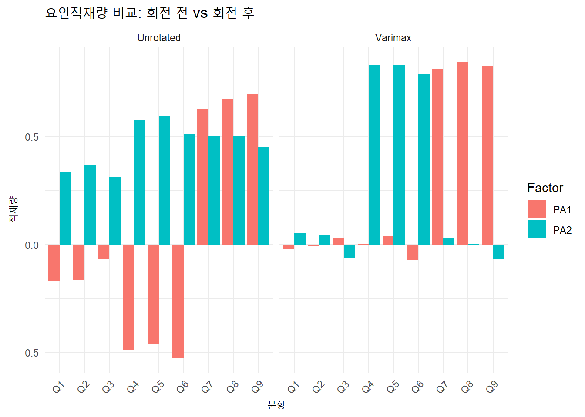
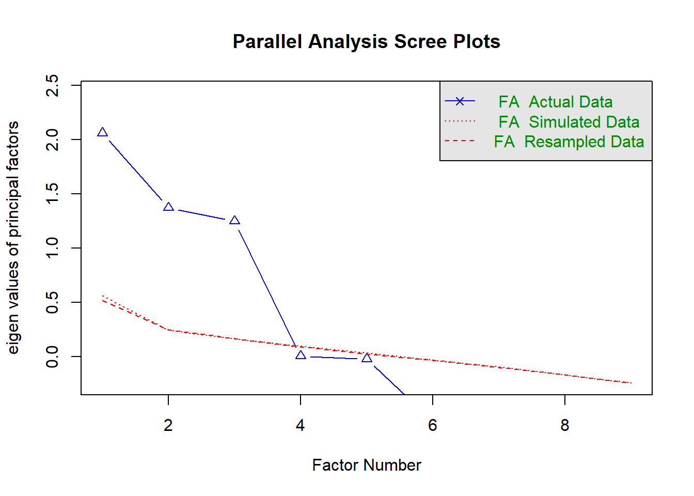
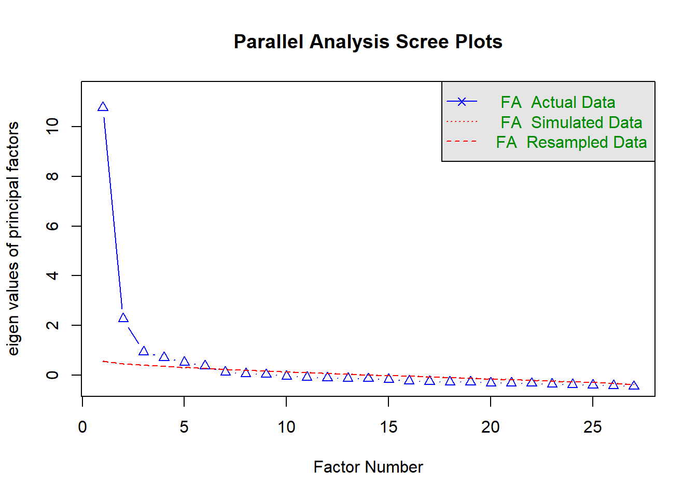
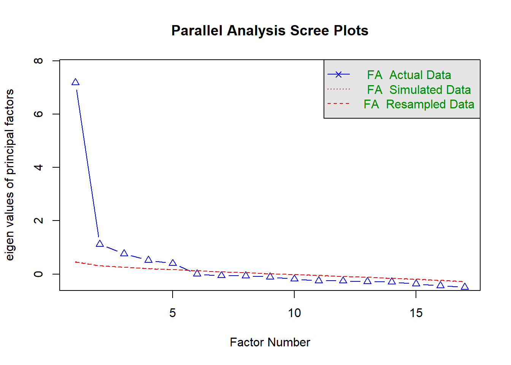

외식산업에서 고객 만족도 조사를 실시한다고 가정하자. 설문지에는 맛, 청결, 가격 만족도, 접근성, 분위기, 직원 친절도 등 다양한 항목이 들어간다. 처음 보면 각 문항이 독립적으로 보일 수 있지만 실제로는 서비스 만족, 제품 품질, 매장 환경처럼 더 큰 개념(요인)으로 묶일 수 있다.
이처럼 여러 변수들이 사실은 공통된 개념에 의해 함께 움직일 수 있다는 가정을 바탕으로, 변수 간 상관관계를 분석하여 그 공통된 구조를 찾아내는 것이 요인분석(factor analysis)의 목적이다.
요인분석은 단순한 차원축소가 아니라, 숨겨진 구조를 발견하는 탐색도구에 가깝다.
9.1.2 주성분분석과 요인분석은 어떻게 다른가?
요인분석은 흔히 주성분분석(PCA)과 혼동되지만, 통계적 철학과 수학적 가정이 다르다.
주성분분석은 단순히 데이터를 잘 요약할 수 있는 방향(축)을 찾는 방식이다. 이 방법은 변수 간의 전체 분산을 최대한 설명하는 축을 찾아 차원을 축소한다. 따라서 고유한 특성(노이즈 포함)을 제거하지 않는다.
반면 요인분석은 변수들이 공유하는 공통된 요인(common factor)만 설명하고, 각 변수 고유의 특성이나 오차는 인정하고 버리는 방식이다.
다시 말하면, 주성분분석은 전체 정보에 관심이 있고, 요인분석은 공통된 구조에만 관심이 있다.
9.1.3 분산의 구조로 비교해보자
주성분분석에서는 전체 분산이 다음과 같이 구성된다.
Total Variance = Common Variance
이는 곧, 각 변수의 고유한 특성(Unique Variance)이 없다고 보는 것이다.
하지만 요인분석에서는 분산을 다음과 같이 분리한다.
Total Variance = Common Variance + Unique Variance
고유분산(unique variance)은 다시 특이한 요인(specific variance)과 오차(error)로 나뉜다. 이는 아래의 그림처럼 시각화할 수 있다.
# 간단한 요인분석 분산 분해 개념 시각화library(ggplot2)data <-data.frame(component =c("공통성", "고유성"),value =c(70, 30))ggplot(data, aes(x ="", y = value, fill = component)) +geom_col(width =1) +coord_polar(theta ="y") +labs(title ="요인분석의 분산 구성", x ="", y ="") +theme_void() +theme(legend.title =element_blank())

이 그림은 전체 분산 중 약 70% 정도만 공통된 요인으로 설명되고, 나머지 30%는 각 변수 고유의 특성 또는 오차로 간주된다는 요인분석의 일반적 특징을 보여준다.
학생들이 이 문항들을 각각 따로 분석한다면 너무 많은 변수를 다뤄야 하며, 해석도 어렵다. 하지만 이들 항목이 사실상 공통된 하나의 개념인 서비스 품질로 설명된다면, 이 하나의 요인을 사용해 분석을 단순화할 수 있다. 물론 여기서 주의할 점이 하나 있다. 보다 정확한 개념정의 및 구조화를 원한다면 학술논문을 주의 깊게 읽고 이를 파악하여 적용하여야 한다. 그러나, 단지 비즈니스적 분석을 목적으로 한다면 보다 자유롭게 해볼 수는 있다.
이처럼 요인분석은 다수의 문항을 묶어 숨겨진 구조를 찾고, 분석 가능성을 높이는 통계도구이다.
여기서 \(\lambda\)는 요인적재량(factor loading), \(F\)는 공통요인, \(\epsilon\)는 고유오차(측정오차 포함)이다.
즉, 각 변수는 공통요인에 일정한 가중치로 영향을 받으며, 고유한 요인도 일정 부분 작용한다고 본다. 이 점이 주성분분석과 다른 핵심이다.
9.1.6 요인분석은 언제 사용하는가?
1. 설문 문항이 많고 유사한 문항들이 있을 때 2. 숫자로 참조할 수 없는 ‘숨겨진 개념’(예: 서비스 만족도, 브랜드 이미지 등)을 해석하고자 할 때 3. 회귀분석 등에서 변수 수를 줄이고 다중공선성(multicollinearity) 문제를 피하고자 할 때
실제로 외식 마케팅이나 소비자 행동연구에서는 맛 만족도, 분위기 만족도, 재방문 의도 등을 요인으로 묶어서 구조방정식(SEM)이나 경로분석(Path Analysis)에 사용한다.
9.1.7 정리하면
요인분석은 데이터를 단순화하지만 그 단순화는 무작위 축소가 아니라 이론적 구조와 통계적 상관관계를 기반으로 한 개념화 과정이다.
이제 다음 절에서는 요인을 어떻게 수학적으로 계산하고 추출하는지, 그리고 공통성(Communality)란 무엇인지 구체적으로 살펴본다. 요인분석의 수학적 기초는 주성분분석을 바탕으로 출발하기 때문에 PCA의 이해는 필수다.
여기까지 읽고 다음 질문을 고민해보자.
“모든 변수의 고유성까지 포함해서 설명하는 게 더 좋은 거 아닐까? 왜 굳이 일부 분산(공통성)만 보려는 걸까?”
이 의문이 요인분석의 본질을 이해하는 데 매우 중요하다.
9.2 요인추출 방법
9.2.1 왜 요인을 추출해야 하는가?
설문이나 관찰을 통해 수집한 수많은 변수들이 실제로는 몇 개의 공통된 구조에 의해 움직인다는 것을 파악하는 것이 요인분석의 핵심이다. 그런데 이 숨겨진 요인을 수학적으로 어떻게 “추출”할 수 있을까? 그때 사용하는 대표적인 방법이 바로 PAF(주축 요인 추출법, Principal Axis Factoring)이다.
9.2.2 PAF의 기본 아이디어
PAF는 상관관계 행렬을 바탕으로 요인을 추출한다. 하지만 일반적인 주성분분석(PCA)과는 달리, 공통성(Communality)만을 고려한다는 점에서 다르다. 각 변수의 분산에서 공통적으로 설명되는 부분만 고려하고, 고유한 특성과 오차는 제거한다.
PAF의 분석 절차는 다음과 같은 흐름을 따른다.
1. 먼저 변수들을 표준화한 후 상관관계 행렬을 구한다. 2. 이 상관관계 행렬의 대각 원소(분산)를 각 변수의 \(R^2\) 값(설명력)으로 대체한다. 이것이 공통성의 초기 추정값이다. 3. 이 초기값을 가지고 요인적재량(factor loading)을 추정한 후, 다시 공통성을 재계산한다. 4. 공통성의 변화가 충분히 작아질 때까지 반복(iteration)한다.
즉, 초기 공통성 값으로 시작하여 반복 계산을 통해 점점 더 정밀하게 공통성을 추정하는 방식이다.
9.2.3 공통성의 의미
공통성(Communality)은 각 변수가 추출된 요인으로부터 얼마나 잘 설명되는지를 나타낸다. 수학적으로는 변수와 요인의 상관계수의 제곱합으로 계산된다. 공통성이 1에 가까울수록 해당 변수는 요인으로 잘 설명된다는 뜻이다. 반대로 공통성이 0에 가까우면 그 변수는 요인으로 설명되지 않는다는 의미다.
예를 들어, 외식 매장에 대한 설문에서 ‘직원의 친절도’, ‘주문 정확성’, ’매장 청결도’가 하나의 요인(서비스 품질)으로 묶일 때, 이 변수들의 공통성은 0.8 이상이어야 해석력이 높다.
Q1 Q2 Q3 Q4 Q5
Min. :2.000 Min. :2.00 Min. :2.00 Min. :1.00 Min. :1.000
1st Qu.:3.000 1st Qu.:3.00 1st Qu.:3.00 1st Qu.:2.75 1st Qu.:3.000
Median :3.000 Median :4.00 Median :3.00 Median :3.00 Median :3.000
Mean :3.495 Mean :3.51 Mean :3.52 Mean :3.01 Mean :3.055
3rd Qu.:4.000 3rd Qu.:4.00 3rd Qu.:4.00 3rd Qu.:4.00 3rd Qu.:4.000
Max. :5.000 Max. :5.00 Max. :5.00 Max. :5.00 Max. :5.000
Q6 Q7 Q8 Q9
Min. :1.00 Min. :1.000 Min. :1.000 Min. :1.000
1st Qu.:3.00 1st Qu.:3.000 1st Qu.:3.000 1st Qu.:3.000
Median :3.00 Median :3.000 Median :3.000 Median :3.000
Mean :3.05 Mean :3.255 Mean :3.145 Mean :3.215
3rd Qu.:4.00 3rd Qu.:4.000 3rd Qu.:4.000 3rd Qu.:4.000
Max. :5.00 Max. :5.000 Max. :5.000 Max. :5.000
# 1. 적정 요인 개수 확인: Scree plotfa.parallel(data, fa ="fa", fm ="pa", n.iter =100)
Parallel analysis suggests that the number of factors = 3 and the number of components = NA
# 2. 회전 전 요인분석 (PAF, 요인 수 3개)fa_pa_unrotated <-fa(data, nfactors =3, fm ="pa", rotate ="none")# 3. 회전 후 요인분석 (Varimax 회전)fa_pa_rotated <-fa(data, nfactors =3, fm ="pa", rotate ="varimax")# 4. 결과 비교 출력print(fa_pa_unrotated, digits =3, sort =TRUE)
Factor Analysis using method = pa
Call: fa(r = data, nfactors = 3, rotate = "none", fm = "pa")
Standardized loadings (pattern matrix) based upon correlation matrix
item PA1 PA2 PA3 h2 u2 com
Q9 9 0.694 0.449 -0.067 0.688 0.312 1.74
Q8 8 0.671 0.499 -0.125 0.715 0.285 1.93
Q7 7 0.625 0.503 -0.123 0.658 0.342 2.00
Q6 6 -0.526 0.512 -0.300 0.628 0.372 2.58
Q5 5 -0.459 0.596 -0.353 0.691 0.309 2.56
Q4 4 -0.488 0.574 -0.350 0.689 0.311 2.64
Q3 3 -0.068 0.310 0.750 0.664 0.336 1.35
Q2 2 -0.166 0.367 0.724 0.686 0.314 1.60
Q1 1 -0.170 0.334 0.660 0.576 0.424 1.64
PA1 PA2 PA3
SS loadings 2.109 1.993 1.894
Proportion Var 0.234 0.221 0.210
Cumulative Var 0.234 0.456 0.666
Proportion Explained 0.352 0.332 0.316
Cumulative Proportion 0.352 0.684 1.000
Mean item complexity = 2
Test of the hypothesis that 3 factors are sufficient.
df null model = 36 with the objective function = 4.102 with Chi Square = 800.634
df of the model are 12 and the objective function was 0.04
The root mean square of the residuals (RMSR) is 0.011
The df corrected root mean square of the residuals is 0.019
The harmonic n.obs is 200 with the empirical chi square 1.721 with prob < 1
The total n.obs was 200 with Likelihood Chi Square = 7.687 with prob < 0.809
Tucker Lewis Index of factoring reliability = 1.0171
RMSEA index = 0 and the 90 % confidence intervals are 0 0.046
BIC = -55.893
Fit based upon off diagonal values = 0.999
Measures of factor score adequacy
PA1 PA2 PA3
Correlation of (regression) scores with factors 0.932 0.927 0.920
Multiple R square of scores with factors 0.869 0.860 0.847
Minimum correlation of possible factor scores 0.738 0.720 0.693
print(fa_pa_rotated, digits =3, sort =TRUE)
Factor Analysis using method = pa
Call: fa(r = data, nfactors = 3, rotate = "varimax", fm = "pa")
Standardized loadings (pattern matrix) based upon correlation matrix
item PA1 PA2 PA3 h2 u2 com
Q8 8 0.846 0.002 -0.013 0.715 0.285 1.00
Q9 9 0.827 -0.070 0.014 0.688 0.312 1.01
Q7 7 0.811 0.031 -0.003 0.658 0.342 1.00
Q4 4 0.001 0.830 0.003 0.689 0.311 1.00
Q5 5 0.037 0.830 0.005 0.691 0.309 1.00
Q6 6 -0.073 0.789 0.028 0.628 0.372 1.02
Q2 2 -0.009 0.043 0.827 0.686 0.314 1.01
Q3 3 0.032 -0.065 0.812 0.664 0.336 1.02
Q1 1 -0.023 0.051 0.757 0.576 0.424 1.01
PA1 PA2 PA3
SS loadings 2.064 2.015 1.917
Proportion Var 0.229 0.224 0.213
Cumulative Var 0.229 0.453 0.666
Proportion Explained 0.344 0.336 0.320
Cumulative Proportion 0.344 0.680 1.000
Mean item complexity = 1
Test of the hypothesis that 3 factors are sufficient.
df null model = 36 with the objective function = 4.102 with Chi Square = 800.634
df of the model are 12 and the objective function was 0.04
The root mean square of the residuals (RMSR) is 0.011
The df corrected root mean square of the residuals is 0.019
The harmonic n.obs is 200 with the empirical chi square 1.721 with prob < 1
The total n.obs was 200 with Likelihood Chi Square = 7.687 with prob < 0.809
Tucker Lewis Index of factoring reliability = 1.0171
RMSEA index = 0 and the 90 % confidence intervals are 0 0.046
BIC = -55.893
Fit based upon off diagonal values = 0.999
Measures of factor score adequacy
PA1 PA2 PA3
Correlation of (regression) scores with factors 0.932 0.928 0.920
Multiple R square of scores with factors 0.869 0.860 0.846
Minimum correlation of possible factor scores 0.738 0.721 0.692
# 5. 요인적재량 시각화 (회전 전후 비교)loadings_unrot <-as.data.frame(unclass(fa_pa_unrotated$loadings))loadings_rot <-as.data.frame(unclass(fa_pa_rotated$loadings))loadings_unrot$Variable <-rownames(loadings_unrot)loadings_rot$Variable <-rownames(loadings_rot)library(tidyr)library(dplyr)loadings_long <-bind_rows( loadings_unrot %>%mutate(Rotation ="Unrotated"), loadings_rot %>%mutate(Rotation ="Varimax")) %>%pivot_longer(cols =c(PA1, PA2), names_to ="Factor", values_to ="Loading")ggplot(loadings_long, aes(x = Variable, y = Loading, fill = Factor)) +geom_bar(stat ="identity", position ="dodge") +facet_wrap(~ Rotation) +theme_minimal() +labs(title ="요인적재량 비교: 회전 전 vs 회전 후", y ="적재량", x ="문항") +theme(axis.text.x =element_text(angle =45, hjust =1))

위에서 1차적으로 적정요인의 개수를 Scree Plot을 이용해서 확인하였다. eigen value가 1 이상인 요인은 3개로 확인되어 적정 요인수는 3개임을 알 수 있다. 단순히 결과가 그렇기 때문이 아니라, 이는 우리가 이 분석을 하기 전에 이미 이러한 구조 즉, 3개의 요인이 나오도록 설문을 구성했기 때문에 이렇게 된 것이다. 결론적으로 우리가 구성한 설문이 우리의 계획대로 3개의 요인 즉 개념으로 잘 구성되었다는 것이 1차적으로 Scree Plot을 통해 검증된 것이다.
다음은 무회전 vs. varimax 회전 요인분석의 결과에 대한 비교이다.
항목
무회전 (None)
Varimax 회전
SS loadings (합산 요인적재 제곱합)
2.109, 1.993, 1.894
2.064, 2.015, 1.917
Proportion of Variance (고유분산 설명비율)
0.234, 0.221, 0.210
0.229, 0.224, 0.213
Cumulative Variance (누적 설명력)
66.6%
66.6% (동일)
Tucker Lewis Index (TLI)
1.0171
1.0171
RMSEA
0 (90% CI: 0 ~ 0.046)
0 (동일)
RMSR
0.011
0.011 (동일)
Factor Score Adequacy (요인점수 적합도)
PA1–3: 0.869, 0.860, 0.847 (R²)
거의 동일 (변동 없음)
우선 무회전 (rotate = “none”) 요인분석 결과에 대해 살펴보자. 무회전 요인분석의 경우 적재량이 세 요인에 고루 분산되어 있음을 알 수 있다. 그러나, 대부분의 문항이 여러 요인에 중복 적재되어 어느 문항이 어느 요인에 관련된 것인지 해석이 모호하다. 예를 들어, 문항 Q3이 PA1 0.45, PA2 0.39 등으로 적재되면 해당 문항이 어떤 요인을 대표하는지 불분명하다. 또 다른 특징은 \(\text{Mean Item Complexity} = 2\)라는 것인데, 이는 각 문항이 평균적으로 두 개 요인에 의미 있는 적재를 보였다는 의미이다. 따라서, 이런 경우 해석 가능성이 낮고, 설문지 항목을 분류하거나 명확한 요인명을 붙이기 어렵다.
이러한 문제를 해결하기 위해 요인분석에서는 rotation을 일반적으로 사용한다. 뒤에서 자세하게 다루겠지만, rotation이란 축을 회전시킴으로써 각 설문문항이 축에 대응되도록 하는 것이다. 여기서는 Varimax 회전 (rotate = “varimax”)을 사용한 결과를 살펴보겠다. 각 문항이 하나의 요인에 명확하게 적재되어 있다. 이로 인해, 문항과 요인 간 일대일 대응 관계가 명확해지고, 해석이 쉬워졌다. 또한, \(\text{Mean Item Complexity} = 1\)로 각 문항이 거의 하나의 요인에만 적재되어 있다는 것이 특징이다. 따라서, 요인명의 명명(factor naming)이 명확하고, 실제 구성 개념과의 대응이 쉽다.
더 자세한 해석은 다음 절에서 공부하도록 하자.
9.2.6 SPSS와 R의 차이점은?
SPSS에서는 기본적으로 공통성의 초기값을 변수별 다중회귀분석의 \(R^2\)로 설정하고 반복(iteration)을 통해 재추정한다. SPSS는 사용자가 iteration 종료 조건을 수정하지 않는 한, 기본적으로 25회까지만 반복하고 멈춘다.
반면 R의 psych::fa() 함수에서는 iteration 종료 기준을 epsilon 값(예: 0.001 미만)으로 제어하며, 반복 횟수는 max.iter 인자를 통해 조정할 수 있다. 또한 R은 다양한 요인추출법(fm = "ml", "minres", "uls", "pa")을 지원하며, 공통성 초기 추정값도 사용자가 직접 설정할 수 있다.
따라서 SPSS는 사용이 간편하나 유연성이 낮고, R은 복잡하지만 고급 설정이 가능하다는 특징이 있다.
항목
R (psych 패키지 중심)
SPSS
주요 알고리즘
fa() 함수에서 fm= 인자로 선택 - pa: Principal Axis Factoring - ml: Maximum Likelihood - minres: Minimum Residual (기본값) - wls: Weighted Least Squares - gls: Generalized LS - ols, uls, alpha, beta 등
- Principal Axis Factoring - Maximum Likelihood - Alpha Factoring - Unweighted Least Squares - Image Factoring
회전 방식
- rotate= 인자 사용 - none, varimax, promax, oblimin, quartimin 등 다수 지원
- Eigenvalue, Communality - KMO/Bartlett test - Total Variance Explained
표준화 여부
사용자가 명시해야 함 (cor=TRUE 등)
자동 표준화 처리
시각화
별도 시각화 패키지 필요 (fa.diagram, psych::plot)
기본 GUI에 Scree Plot, Component Plot 포함
간혹 데이터가 큰 경우 SPSS와 R에서 약간씩 다른 요인분석 결과가 나오기도 하는데 원인은 여러가지가 있지만, 대체로 다음의 것들이 주요한 원인이다 .
원인
설명
표준화 여부
R에서는 raw data일 경우 표준화 생략되기도 하며 SPSS는 자동 표준화
결측치 처리
R은 명시적으로 처리해야 하며, SPSS는 pairwise 또는 listwise로 처리함
회전 알고리즘 구현 방식 차이
동일 명칭이더라도 구현 방식과 정밀도에서 차이 발생
추출 방식의 수치적 최적화 방식
특히 ml과 같이 수치최적화를 요하는 방식에서는 초기값 설정에 따라 수렴 결과가 달라짐
기본 옵션 차이
SPSS는 고정 옵션이 많고 사용자가 세밀하게 설정하기 어렵지만, R은 매우 유연한 대신 숙련도 필요
9.2.7 마무리하며
PAF는 요인분석에서 가장 보편적으로 사용되는 요인추출 기법이다. 공통성의 반복 추정 과정을 통해 보다 정확하게 요인을 정의하고, 각 변수와 요인의 관계를 수학적으로 모델링할 수 있다.
PAF의 핵심인 공통성의 개념을 반드시 이해하고 있어야 하며, 반복(iteration)의 의미와 종료 기준이 어떤 방식으로 결정되는지도 숙지해야 한다. 특히 실무에서는 공통성이 0.5 이상인 변수만 해석 대상으로 삼는다는 실무적 기준도 기억해두면 좋다.
다음 절에서는 이 요인들을 어떻게 시각적으로 단순화하고 해석력을 높이는지, 즉 요인회전(Factor Rotation)에 대해 다룬다.
9.3 요인분석 결과 해석
외식서비스 만족도 조사를 통해 수집한 문항 데이터를 바탕으로 요인분석을 실시하였다. 설문문항은 총 9개이며, 각각 친절, 환경, 음식이라는 세 가지 요인을 측정하도록 설계되었다. 분석 목적은 이들 문항이 실제로 어떤 요인으로 묶이는지 파악하고, 각각의 요인이 데이터 전체에서 어떤 역할을 하는지를 해석하는 데 있다.
문항
내용
Q1
직원들이 항상 친절하게 응대했다
Q2
요청 사항에 대해 신속히 반응했다
Q3
종업원의 말투와 태도가 예의 바르다고 느꼈다
Q4
매장이 청결하게 관리되고 있었다
Q5
매장의 조명과 분위기가 쾌적했다
Q6
매장 내 소음이 적절하고 편안했다
Q7
음식의 맛이 만족스러웠다
Q8
음식이 신선하게 느껴졌다
Q9
음식이 적절한 온도로 제공되었다
요인분석 결과 해석을 위해 다음의 핵심 지표들을 이해해야 한다: 요인적재량(Factor loading), 공통성(Communality), 고유값(Eigen value), 설명된 총분산(Total Variance Explained) 등이다.
다음은 앞서 분석한 결과에 대해 설명을 붙인 것이다.
# 무회전 요인분석 결과 (Unrotated Factor Analysis)
Factor Analysis using method = pa # 요인추출 알고리즘: Principal Axis Factoring (PAF)
Call: fa(r = data, nfactors = 3, rotate = 'none', fm = 'pa') # 요인 3개 지정, 회전 없음
Standardized loadings (pattern matrix) based upon correlation matrix
PA1 PA2 PA3
SS loadings 2.109 1.993 1.894 # 각 요인이 설명하는 고유값의 합 (Eigen value)
Proportion Var 0.234 0.221 0.210 # 각 요인이 설명하는 분산 비율
Cumulative Var 0.234 0.456 0.666 # 누적 설명력: 요인 3개로 전체 분산의 66.6% 설명
Proportion Explained 0.352 0.332 0.316 # 전체 설명된 분산 중 각 요인이 기여한 비율
Cumulative Proportion 0.352 0.684 1.000 # 누적 기여도 (전체 비율로 100% 맞춤)
Mean item complexity = 2 # 각 문항이 평균적으로 약 2개의 요인에 적재됨
Test of the hypothesis that 3 factors are sufficient.
df null model = 36 with the objective function = 4.102
with Chi Square = 800.634 # Null 모형 (요인 없음)에서의 적합도
df of the model are 12 and the objective function was 0.04
# 요인모형의 자유도 및 목적함수 값
The root mean square of the residuals (RMSR) is 0.011 # 잔차 제곱평균근, 낮을수록 좋음
The df corrected root mean square of the residuals is 0.019 # 자유도 보정된 RMSR
The harmonic n.obs is 200
with the empirical chi square 1.721 with prob < 1
# 경험적 카이제곱 값과 p값 (적합도 우수)
The total n.obs was 200
with Likelihood Chi Square = 7.687 with prob < 0.809
# 우도기반 카이제곱 검정 결과 (모형 적합함)
Tucker Lewis Index of factoring reliability = 1.0171 # TLI > 0.9 → 매우 양호한 적합도
RMSEA index = 0 # RMSEA = 0 → 완전 적합
90 % confidence intervals are 0 0.046 # 신뢰구간도 0~0.05 → 완전 적합 범위
BIC = -55.893 # Bayesian Information Criterion (낮을수록 좋음)
Fit based upon off diagonal values = 0.999 # 요인 모형이 상관행렬의 비대각 요소를 잘 설명
Measures of factor score adequacy # 요인 점수의 정확도 평가
PA1 PA2 PA3
Correlation of (regression) scores with factors 0.932 0.927 0.920
# 요인 점수와 진짜 요인의 상관 (높을수록 좋음)
Multiple R square of scores with factors 0.869 0.860 0.847
# 결정계수 (요인 점수의 설명력)
Minimum correlation of possible factor scores 0.738 0.720 0.693
# 가능한 최소 상관 (음수이면 해석 주의)
# 문항별 요인 적재값 및 해석 (무회전 요인분석 기준)
item PA1 PA2 PA3 h2 u2 com # 해석
Q9 0.694 0.449 -0.067 0.6884 0.3116 1.7356 # 요인1과 2에 교차 적재
Q8 0.671 0.499 -0.125 0.7153 0.2847 1.9292 # 요인1과 2에 교차 적재
Q7 0.625 0.503 -0.123 0.6584 0.3416 2.0009 # 요인1과 2에 교차 적재
Q6 -0.526 0.512 -0.300 0.6285 0.3715 2.5777 # 요인1과 2에 교차 적재
Q5 -0.459 0.596 -0.353 0.6906 0.3094 2.5629 # 요인1에 2,3에 교차적재
Q4 -0.488 0.574 -0.350 0.6893 0.3107 2.6426 # Q5와 유사 - 해석 주의
Q3 -0.068 0.310 0.750 0.6639 0.3361 1.3510 # 요인3 단일요인 문항
Q2 -0.166 0.367 0.724 0.6860 0.3140 1.6037 # 요인3 중심
Q1 -0.170 0.334 0.660 0.5760 0.4240 1.6368 # 요인3에 주로 적재
# Varimax 회전 요인분석 결과
Factor Analysis using method = pa # 요인추출 방식: 주축요인법(principal axis factoring)
Call: fa(r = data, nfactors = 3, rotate = 'varimax', fm = 'pa')
# 요인 3개, Varimax 회전 적용, 추출방법은 'pa'
Standardized loadings (pattern matrix) based upon correlation matrix
PA1 PA2 PA3
SS loadings 2.064 2.015 1.917 # 각 요인이 설명하는 고유값 (eigen value)
Proportion Var 0.229 0.224 0.213 # 각 요인이 설명하는 전체 분산의 비율
Cumulative Var 0.229 0.453 0.666 # 누적 설명력: 세 요인이 총 66.6%의 분산 설명
Proportion Explained 0.344 0.336 0.320 # 총 공통성 중 각 요인이 설명하는 비율
Cumulative Proportion 0.344 0.680 1.000 # 총 공통성에 대한 누적 설명 비율
Mean item complexity = 1 # 평균 복잡도: 각 문항이 주로 하나의 요인에만 적재 (이상적)
Test of the hypothesis that 3 factors are sufficient.
df null model = 36 with the objective function = 4.102 with Chi Square = 800.634
# null 모델 적합도 (상관 없음 가정)
df of the model are 12 and the objective function was 0.04
# 3요인 모델의 적합도, 매우 작음 → 좋은 적합
The root mean square of the residuals (RMSR) is 0.011
# 잔차 제곱 평균: 0.05 미만은 매우 양호
The df corrected root mean square of the residuals is 0.019
# 자유도 보정 잔차 제곱 평균
The harmonic n.obs is 200 with the empirical chi square 1.721 with prob < 1
# 관측치 200명 기준 경험적 적합도 매우 우수
The total n.obs was 200 with Likelihood Chi Square = 7.687 with prob < 0.809
# 우도 기반 카이제곱도 비유의미 → 적합도 양호
Tucker Lewis Index of factoring reliability = 1.0171
# TLI > 0.95 이면 매우 적합, 1 초과는 과적합 가능성
RMSEA index = 0 and the 90 % confidence intervals are 0 0.046
# RMSEA = 0 → 완벽한 적합, 상한도 0.05 미만으로 우수
BIC = -55.893 # 모형 선택 지표, 음수는 적합도 우수
Fit based upon off diagonal values = 0.999 # 비대각선 상의 적합도: 1에 가까울수록 이상적
Measures of factor score adequacy
PA1 PA2 PA3
Correlation of (regression) scores with factors 0.932 0.928 0.920
# 추정된 요인 점수와 실제 요인 간 상관: 0.9 이상으로 매우 높음
Multiple R square of scores with factors 0.869 0.860 0.846
# 요인 점수가 실제 요인을 설명하는 결정계수 (설명력)
Minimum correlation of possible factor scores 0.738 0.721 0.692
# 가능한 최소 상관도: 요인점수의 신뢰도 수준 반영
# Varimax 회전 요인분석 결과 해석
item PA1 PA2 PA3 h2 u2 com # 해석
Q8 0.846 0.002 -0.013 0.7153 0.2847 1.0005 # 요인1에 강하게 적재
Q9 0.827 -0.070 0.014 0.6884 0.3116 1.0149 # 요인1 중심, 단일 적재 구조
Q7 0.811 0.031 -0.003 0.6584 0.3416 1.0029 # 요인1 전용 문항
Q4 0.001 0.830 0.003 0.6893 0.3107 1.0000 # 요인2에 명확하게 적재
Q5 0.037 0.830 0.005 0.6906 0.3094 1.0041 # 요인2에만 적재됨
Q6 -0.073 0.789 0.028 0.6285 0.3715 1.0196 # 요인2 전용 문항.
Q2 -0.009 0.043 0.827 0.6860 0.3140 1.0056 # 요인3에 강하게 적재
Q3 0.032 -0.065 0.812 0.6639 0.3361 1.0157 # 요인3에 적재
Q1 -0.023 0.051 0.757 0.5760 0.4240 1.0108 # 요인3 중심
9.3.1 요인적재량(Factor loading): 변수와 요인 간의 관계
요인적재량은 각 문항이 특정 요인에 얼마나 밀접하게 연관되어 있는지를 나타낸다. 값이 클수록 해당 요인이 해당 문항을 잘 설명하고 있다는 뜻이다. 일반적으로 0.4 이상을 의미 있는 적재값으로 본다.
예를 들어, 회전 후 분석결과에서 Q8의 PA1 적재량은 0.846로 매우 높으며, 이는 Q8이 요인1(친절)에 강하게 관련되어 있음을 보여준다. 반대로 PA2와 PA3의 적재량은 0.002, -0.013로 매우 낮아 이 문항이 다른 요인들과는 관련이 거의 없음을 의미한다.
9.3.2 공통성(Communality): 요인들이 설명하는 변수의 분산 비율
공통성은 특정 문항의 분산 중에서 요인들이 함께 설명해주는 부분을 의미한다. 값이 0.7 이상이면 해당 문항이 요인구조 내에서 잘 설명된다고 판단할 수 있다.
예를 들어 Q8의 공통성(h2 값)은 0.7153이며, 이는 전체 분산의 71.5%가 요인들에 의해 설명된다는 뜻이다. 반대로 Q1의 공통성은 0.576으로 상대적으로 낮아, 해당 문항이 요인 구조에서 완벽하게 설명되지 않는다는 것을 시사한다.
9.3.3 고유값(eigen value): 요인이 설명하는 총 분산
각 요인은 데이터를 구성하는 전체 분산 중 일부를 설명한다. 고유값(Eigen value)은 각 요인이 설명하는 분산의 총량이다. 일반적으로 고유값이 1 이상인 요인만 해석에 포함시킨다.
회전 후 분석 결과에 따르면, 세 개 요인의 고유값은 각각 2.064, 2.015, 1.917이다. 이는 각 요인이 약 2개의 문항 분산 정도를 설명하고 있다는 의미이며, 이 기준을 충족하므로 세 요인 모두 유지된다.
9.3.4 설명된 총분산(Total Variance Explained): 전체 데이터에서 요인이 설명하는 비율
전체 9개의 문항 중 세 개의 요인이 설명하는 누적 분산 비율은 66.6%로 나타났다. 이는 설문 데이터에서 세 개 요인으로 전체의 3분의 2 이상을 설명할 수 있다는 것을 의미한다. 사회과학에서는 누적설명력이 60% 이상이면 충분하다고 간주한다.
요인
고유값
설명비율
누적 설명비율
PA1
2.064
22.9%
22.9%
PA2
2.015
22.4%
45.3%
PA3
1.917
21.3%
66.6%
9.3.5 Varimax 회전 전후 결과 비교
회전을 적용하지 않았을 때는 각 문항이 여러 요인에 적재되어 해석이 모호한 경향이 있었으나, Varimax 회전 후에는 대부분의 문항이 단일 요인에 강하게 적재되어 요인 해석이 뚜렷해졌다. 특히 Q7, Q8, Q9는 모두 요인1에 강하게 적재되어 친절 관련 항목임을 명확하게 보여주고 있다. Q4 ~ Q6는 환경, Q1 ~ Q3은 음식에 관련된 문항으로 군집화되었다.
9.3.6 왜 Varimax가 꼭 필요한가?
회전하지 않은 요인해석은 흐릿한 안경을 쓰고 세상을 보는 것과 같다. 모든 문항이 흐릿하게 여러 요인에 걸쳐 적재되므로 어떤 요인이 무엇을 의미하는지 해석하기가 어렵다. Varimax 회전은 안경을 닦아주는 것과 같아서, 각 요인이 어떤 문항들과 연관되어 있는지를 선명하게 보여준다. 특히 외식산업 설문 분석에서 각 문항이 명확히 어떤 차원을 대표하는지 아는 것은 매우 중요하다.
이는 Varimax 회전의 목적이 문항과 요인 간의 관계를 단순화하고 해석력을 높이는 것이라는 이론적 설명과 일치한다. 다만 주의 할 점은 Varimax 회전이 절대적으로 맞다는 것은 아니다. 애초에 우리가 만든 설문의 요인(개념)이 친절, 환경, 음식이라는 다소 상관성이 낮은 개념을 엮었기 때문이다. 문제의 핵심은 이 세 축이 전혀 상관성이 없느냐라는 것이다. 만약, 요인간 상관성이 꽤 높을 수 밖에 없는 설문을 만들었다면, 애초에 Varimax가 아닌 다른 회전방법을 사용해야 한다. 왜냐하면, Varimax는 요인간 상관관계를 강제로 0으로 만드는 회전방법이기 때문이다.
9.3.7 문항별 요인구조의 비교와 해석 전략
아래는 Varimax 회전 후 요인별로 주로 적재된 문항을 정리한 표이다.
요인
대표 문항
해석된 요인의 개념
요인1
Q7, Q8, Q9
음식 품질 만족 요인 (Food Quality)
요인2
Q4, Q5, Q6
매장 환경 및 청결 요인 (Cleanliness & Atmosphere)
요인3
Q1, Q2, Q3
종업원 서비스 태도 요인 (Service Kindness)
이처럼 요인별로 적재량이 높은 문항들을 중심으로 요인의 개념을 정의할 수 있다. 특히 Q8, Q9는 0.8 이상의 적재값을 보여 강력한 요인 대표 문항이라 할 수 있다. 이러한 분석을 통해 설문지를 간결화하거나 핵심 요인을 중심으로 마케팅 전략을 설계하는 데 활용할 수 있다.
9.3.8 요인적합도 지표 해석
TLI는 1.017, RMSEA는 0으로, 모두 모형이 데이터에 매우 잘 적합된다는 것을 의미한다. RMSR은 0.011로, 일반적으로 0.05 이하이면 적합도가 양호하다고 본다. BIC가 -55.893으로 음수이며, 이는 모형이 비교적 단순하면서도 데이터 적합도가 높다는 의미이다. 전반적으로 회전된 3요인 모형은 매우 좋은 적합도를 보이며, 요인구조가 간명하고 실용적인 해석이 가능하다.
9.3.9 외식산업 적용 사례 해석
예를 들어 한 외식 프랜차이즈 본부에서 고객 만족도를 조사하기 위해 위와 같은 9개 문항을 사용했다고 하자. 분석 결과, 친절, 환경, 음식이라는 세 가지 요인으로 문항이 뚜렷하게 분류되었다면, 본부는 이 세 가지 핵심 서비스 요소에 맞춰 인력 교육, 인테리어 개선, 메뉴 리뉴얼 등의 전략을 분산시켜 시행할 수 있다. 또한 각 점포의 데이터를 활용해 어떤 요인에서 낮은 점수를 받았는지를 확인함으로써 점포별 맞춤 전략 수립도 가능하다.
9.3.10 분석 코드 재확인
# 요인 수 확인: Scree plotfa.parallel(data, fa ="fa", fm ="pa", n.iter =100)
Warning in fa.stats(r = r, f = f, phi = phi, n.obs = n.obs, np.obs = np.obs, :
The estimated weights for the factor scores are probably incorrect. Try a
different factor score estimation method.
Warning in fac(r = r, nfactors = nfactors, n.obs = n.obs, rotate = rotate, : An
ultra-Heywood case was detected. Examine the results carefully

Parallel analysis suggests that the number of factors = 3 and the number of components = NA
# 무회전 요인분석fa_pa_unrotated <-fa(data, nfactors =3, fm ="pa", rotate ="none")# Varimax 회전 요인분석fa_pa_rotated <-fa(data, nfactors =3, fm ="pa", rotate ="varimax")# 결과 비교print(fa_pa_unrotated)
Factor Analysis using method = pa
Call: fa(r = data, nfactors = 3, rotate = "none", fm = "pa")
Standardized loadings (pattern matrix) based upon correlation matrix
PA1 PA2 PA3 h2 u2 com
Q1 -0.17 0.33 0.66 0.58 0.42 1.6
Q2 -0.17 0.37 0.72 0.69 0.31 1.6
Q3 -0.07 0.31 0.75 0.66 0.34 1.4
Q4 -0.49 0.57 -0.35 0.69 0.31 2.6
Q5 -0.46 0.60 -0.35 0.69 0.31 2.6
Q6 -0.53 0.51 -0.30 0.63 0.37 2.6
Q7 0.62 0.50 -0.12 0.66 0.34 2.0
Q8 0.67 0.50 -0.12 0.72 0.28 1.9
Q9 0.69 0.45 -0.07 0.69 0.31 1.7
PA1 PA2 PA3
SS loadings 2.11 1.99 1.89
Proportion Var 0.23 0.22 0.21
Cumulative Var 0.23 0.46 0.67
Proportion Explained 0.35 0.33 0.32
Cumulative Proportion 0.35 0.68 1.00
Mean item complexity = 2
Test of the hypothesis that 3 factors are sufficient.
df null model = 36 with the objective function = 4.1 with Chi Square = 800.63
df of the model are 12 and the objective function was 0.04
The root mean square of the residuals (RMSR) is 0.01
The df corrected root mean square of the residuals is 0.02
The harmonic n.obs is 200 with the empirical chi square 1.72 with prob < 1
The total n.obs was 200 with Likelihood Chi Square = 7.69 with prob < 0.81
Tucker Lewis Index of factoring reliability = 1.017
RMSEA index = 0 and the 90 % confidence intervals are 0 0.046
BIC = -55.89
Fit based upon off diagonal values = 1
Measures of factor score adequacy
PA1 PA2 PA3
Correlation of (regression) scores with factors 0.93 0.93 0.92
Multiple R square of scores with factors 0.87 0.86 0.85
Minimum correlation of possible factor scores 0.74 0.72 0.69
print(fa_pa_rotated)
Factor Analysis using method = pa
Call: fa(r = data, nfactors = 3, rotate = "varimax", fm = "pa")
Standardized loadings (pattern matrix) based upon correlation matrix
PA1 PA2 PA3 h2 u2 com
Q1 -0.02 0.05 0.76 0.58 0.42 1
Q2 -0.01 0.04 0.83 0.69 0.31 1
Q3 0.03 -0.06 0.81 0.66 0.34 1
Q4 0.00 0.83 0.00 0.69 0.31 1
Q5 0.04 0.83 0.00 0.69 0.31 1
Q6 -0.07 0.79 0.03 0.63 0.37 1
Q7 0.81 0.03 0.00 0.66 0.34 1
Q8 0.85 0.00 -0.01 0.72 0.28 1
Q9 0.83 -0.07 0.01 0.69 0.31 1
PA1 PA2 PA3
SS loadings 2.06 2.02 1.92
Proportion Var 0.23 0.22 0.21
Cumulative Var 0.23 0.45 0.67
Proportion Explained 0.34 0.34 0.32
Cumulative Proportion 0.34 0.68 1.00
Mean item complexity = 1
Test of the hypothesis that 3 factors are sufficient.
df null model = 36 with the objective function = 4.1 with Chi Square = 800.63
df of the model are 12 and the objective function was 0.04
The root mean square of the residuals (RMSR) is 0.01
The df corrected root mean square of the residuals is 0.02
The harmonic n.obs is 200 with the empirical chi square 1.72 with prob < 1
The total n.obs was 200 with Likelihood Chi Square = 7.69 with prob < 0.81
Tucker Lewis Index of factoring reliability = 1.017
RMSEA index = 0 and the 90 % confidence intervals are 0 0.046
BIC = -55.89
Fit based upon off diagonal values = 1
Measures of factor score adequacy
PA1 PA2 PA3
Correlation of (regression) scores with factors 0.93 0.93 0.92
Multiple R square of scores with factors 0.87 0.86 0.85
Minimum correlation of possible factor scores 0.74 0.72 0.69
9.3.11 R vs SPSS 요인분석 알고리즘 비교
항목
R (psych 패키지)
SPSS
주 요인추출 방법
Principal Axis Factoring (“pa”)
PAF, Maximum Likelihood, Principal Component
회전 방식
varimax, promax, oblimin 등 다양
Varimax, Promax, Direct Oblimin 등
적합도 지표 제공
RMSR, TLI, RMSEA, BIC 등 제공
KMO, Bartlett, Total Variance Explained 등
시각화 지원
Scree plot, loading barplot 등 다양
제한적 (그래픽 시각화 제한)
확장성과 통제력
코드 기반으로 완전한 통제 가능
GUI 기반, 설정 제한 있음
복잡한 데이터일수록 두 소프트웨어 간 결과 차이가 날 수 있는데, 이는 다음과 같은 이유에서 기인한다:
1. SPSS는 기본적으로 정규분포를 가정하며 ML(Maximum Likelihood) 방식을 선호하지만, R에서는 비정규성에 강한 PAF(Principal Axis Factoring)를 많이 사용한다. 2. 회전 방식이나 요인 수 선택 기준이 다를 수 있다 (예: SPSS는 Eigenvalue > 1 기준, R은 Scree plot 또는 parallel analysis 사용). 3. missing data 처리 방식, 변수 스케일 조정, 또는 표준화 기준의 차이도 결과에 영향을 미친다.
따라서 동일한 데이터를 사용하더라도 도구마다 결과는 조금씩 다르게 나올 수 있으며, 해석 시 각 알고리즘의 가정과 특성을 정확히 이해하고 선택하는 것이 중요하다.
9.4 요인점수란 무엇인가
요인점수는 요인분석을 통해 도출된 각 요인에 대해, 개별 응답자(또는 관측 단위)가 해당 요인에 대해 어느 정도의 수준을 보이는지를 나타내는 수치이다. 이는 일종의 새로운 연속형 변수이며, 기존 변수들의 선형 조합으로 계산된다. 요인점수는 평균이 0, 표준편차가 1인 표준화된 값으로, 각 요인에서 응답자의 상대적 위치를 나타낸다.
예를 들어 어떤 고객이 외식 서비스 품질에 대해 응답한 설문에서, 요인1(예: “서비스 만족도”)의 점수가 +2라면, 이는 평균보다 매우 높은 수준의 만족도를 보였다는 의미이다. 반대로 -1.5라면, 해당 요인에 대한 만족도가 평균보다 낮음을 나타낸다.
여기서 \(w_{ij}\)는 각 변수에 부여된 가중치이며, \(X_p\)는 각 응답자의 표준화된 응답값이다. 이는 곧, 표준화된 원자료와 요인점수 가중치 행렬의 곱이다.
9.4.3 요인점수의 특징
요인점수는 다음과 같은 특성을 가진다.
- 평균 0, 분산 1의 표준화된 연속형 변수 - 변수 점수와 요인적재량을 이용한 선형결합으로 계산됨 - 관측 단위가 각 요인에서 어느 정도 위치에 있는지를 정량적으로 표현 - 추정된 요인점수 간에는 상관이 없도록 계산되는 경우도 있음 (orthogonal) - 추후 분석에서 새로운 변수로 활용 가능 (예: 요인점수를 활용한 고객 군집화)
9.4.4 R 실습 예제: 외식서비스 품질 요인점수 계산
다음은 외식서비스에 대한 9개 문항(Q1 ~ Q9)을 이용한 요인분석 후, 요인점수를 계산하는 과정이다. 데이터는 앞서 생성한 data 객체를 활용한다.
library(psych)# 요인분석 수행 (Varimax 회전, 3요인)fa_result <-fa(r = data, nfactors =3, rotate ="varimax", fm ="pa")# 요인점수 계산fscores <-factor.scores(data, fa_result)# 첫 번째 응답자의 요인점수 확인head(fscores$scores)
위 결과를 보면, 첫 번째 그룹은 모든 요인에 불만족한 그룹이고, 세 번째 그룸은 모든 요인에 대해서 만족한 그룹이다. 두 번째 그룹은 매장 환경 및 청결상태에 대해서만 만족한 고객 그룹이라고 할 수 있다. 이런 경우 첫 번째 고객들이 중요한 고객이라고 할 수 있다. 이들은 다시는 재방문 할 가능성이 낮기 때문이다. 또한 이 고객들의 불만 원인을 찾아서 해결하는 것이 향후 매장의 실적에 분명 도움이 될 것이다.
9.4.9 후속분석에서의 활용 예제
요인점수는 회귀분석에서 독립변수 또는 종속변수로 사용될 수 있다. 예를 들어 요인1이 고객 재방문의도에 어떤 영향을 주는지를 회귀분석으로 검토할 수 있다.
Call:
lm(formula = revisit ~ factor_scores[, 1] + factor_scores[, 2] +
factor_scores[, 3])
Residuals:
Min 1Q Median 3Q Max
-2.13255 -0.50125 -0.08564 0.51963 2.70124
Coefficients:
Estimate Std. Error t value Pr(>|t|)
(Intercept) 0.007027 0.064636 0.109 0.914
factor_scores[, 1] 0.457058 0.064798 7.054 2.92e-11 ***
factor_scores[, 2] -0.078981 0.064798 -1.219 0.224
factor_scores[, 3] 0.051432 0.064798 0.794 0.428
---
Signif. codes: 0 '***' 0.001 '**' 0.01 '*' 0.05 '.' 0.1 ' ' 1
Residual standard error: 0.9141 on 196 degrees of freedom
Multiple R-squared: 0.2093, Adjusted R-squared: 0.1972
F-statistic: 17.29 on 3 and 196 DF, p-value: 5.315e-10
위의 분석결과 음식품질 요인이 고객의 재방문에 유의한 영향이 있는 것으로 나타났다. 결국 외식산업에서는 맛이 가장 중요한 재방문의 요인이라고 볼 수 있는 것이다.
9.4.10 요약 정리
요인점수는 요인분석의 결과를 구체적인 수치로 응답자 단위에서 활용 가능하게 만들어주는 핵심 도구이다. 이는 다양한 후속 통계 분석과 실무 의사결정에 직결되며, 외식산업에서는 고객 세분화, 맞춤형 전략, 품질평가 등의 영역에 필수적으로 활용될 수 있다.
다음 장에서는 이러한 요인점수를 활용한 요인기반 군집분석을 다루며, 실제 외식고객 데이터를 기반으로 세그먼트 전략을 도출해본다.
9.5 요인회전의 개념
요인회전(Factor Rotation)은 요인분석에서 도출된 요인적재량 행렬을 보다 해석하기 쉬운 형태로 바꾸는 과정이다. 요인분석을 통해 얻어진 요인적재량은 수학적으로 유일하지 않다. 같은 데이터를 설명하는 여러 개의 요인구조가 존재할 수 있기 때문에, 해석을 단순화하고 명확한 요인별 구조를 도출하기 위해 회전이 필요하다.
요인회전의 궁극적인 목적은 단순구조(simple structure)를 얻는 것이다. 단순구조란, 각 요인이 특정 변수들에 대해서는 높은 적재량을, 나머지 변수들에 대해서는 거의 0에 가까운 적재량을 갖는 구조를 의미한다. 이는 각 요인을 명확하게 구분하고 해석 가능하게 만든다.
9.5.1 요인회전의 종류: 직교 vs 비직교
요인회전 방식은 요인 간 상관관계의 허용 여부에 따라 크게 두 가지로 나뉜다.
구분
방식
대표 방법
요인 간 상관
특징
직교회전 (Orthogonal)
Varimax, Quartimax, Equamax
허용하지 않음 (0)
요인 간 완전 독립을 가정하며 해석이 명확함
비직교회전 (Oblique)
Promax, Direct Oblimin
허용함
요인 간 일정 수준의 상관관계를 가정, 현실적인 모델링에 적합
직교회전은 통계적으로 해석이 단순하고 결과가 명확하게 나뉘기 때문에 초보 연구자나 이론적으로 요인 간 독립성을 가정할 때 많이 사용된다. 반면 비직교회전은 실제 사회현상처럼 요인 간 상관이 있을 수 있다는 전제하에 보다 현실적인 모델을 제시할 수 있다.
9.5.2 외식산업 예제: 직교회전과 비직교회전 비교
외식서비스에 대한 고객 평가 문항 9개를 바탕으로 요인분석을 실시하고, 각각 Varimax와 Promax 회전을 적용하여 요인구조를 비교해보자.
library(psych)# 요인분석: Varimax 회전 (직교)fa_varimax <-fa(data, nfactors =3, rotate ="varimax", fm ="pa")# 요인분석: Promax 회전 (비직교)fa_promax <-fa(data, nfactors =3, rotate ="promax", fm ="pa")
Varimax 회전에서는 각 문항이 특정 요인에만 강하게 적재되는 구조가 도출되어 해석이 단순하지만, 요인 간 완전 독립이라는 가정이 현실적으로 타당하지 않을 수도 있다. 반면 Promax 회전은 문항 간 교차적재가 약간 더 존재하지만, 요인 간 상관관계까지 고려하므로 보다 현실적인 모델을 구성할 수 있다.
요인 간 상관계수가 0.3 ~ 0.4 수준으로 나타난다면, 요인 간 상관을 고려한 Promax 회전이 이론적으로 더 적절하다고 판단할 수 있다. 앞에서 이야기 했듯이 이 경우는 논리적으로도 위의 요인간 상관계수를 보아도 직교회전 방식인 Varimax가 적당하다고 판단할 수 있다.
그러나, 요인 간 상관이 존재하는 경우에도 무조건적으로 Varimax 회전을 사용하는 것은 해석의 왜곡을 초래할 수 있다. 따라서 이론적 모델과 데이터 특성에 따라 적절한 회전방식을 선택해야 한다.
9.5.4 실무 예시: 고객 평가 데이터에서의 해석 차이
예를 들어 다음과 같은 평가 문항들이 있다고 하자.
- Q1~Q3: 가격 만족도 관련 문항 - Q4~Q6: 서비스 응대 태도 관련 문항 - Q7~Q9: 매장 청결 및 환경 관련 문항
이 데이터에 대해 Varimax를 적용하면 세 요인이 명확하게 나뉘며 해석은 용이하지만, 만약 고객이 서비스 응대가 좋으면 가격도 긍정적으로 평가하는 경향이 있다면 요인 간 상관이 존재하는 것이다. 이때 Promax 회전이 보다 현실적인 결과를 제시한다.
요인회전은 단지 기술적인 단계가 아니라 해석의 정확성과 타당성을 확보하는 핵심적 단계이다. 이론적으로 요인 간 독립이 강하게 가정될 경우에는 Varimax 회전이 적절하고, 실무적 맥락이나 사회심리적 요인이 서로 연관되어 있다고 판단된다면 Promax 회전을 적용해야 한다. R과 SPSS 모두 이러한 회전 방식을 지원하며, 결과 해석 시 회전 방식의 차이에 주의할 필요가 있다.
한 가지 조심할 점은 SPSS의 경우 차원축소라는 메뉴 내부에 요인분석이 있는데 이 메뉴에는 요인분석의 알고리즘과 주성분분석의 알고리즘이 섞여 있다는 점이다. 특히, 디폴트로 되어 있는 값이 주성분분석이다. 많은 경우 요인분석이라는 메뉴를 클릭하고 디폴트 값으로 분석을 진행한 후에 리포트할 때, 요인분석을 했다고 리포트를 한다는 점이다. 소프트웨어가 사용하기 쉽다는 점은 자칫 분석가의 전문성을 의심하게 만들 뿐만 아니라 심지어 양심의 문제까지도 의심하게 만든다. 불과 10년 혹은 20년 전과 비교해보면, 데이터 분석이 지금처럼 쉬울 수 없는 시대를 과거에는 생각할 수도 없었다. 문제는 쉬운 것이 문제가 아니라 이 쉬운 툴을 사용하는 분석가가 문제인 것이다.
9.5.5 요인회전의 수학적 원리와 시각적 이해
요인분석에서는 관측된 변수들이 잠재된 소수의 요인들에 의해 설명된다고 가정한다. 하지만 초기 추출된 요인들은 해석이 어려운 구조를 가질 수 있다. 요인회전은 이러한 요인구조를 보다 명확하고 해석 가능하게 단순화하기 위한 수학적 변환 과정이다.
9.5.6 요인회전의 수학적 원리
회전은 단순히 좌표계를 회전시키는 선형변환(linear transformation)이다. 회전 후에도 각 변수의 분산은 유지되며, 공통성(\(h^2\))도 변하지 않는다.
초기 요인행렬을 \(L\) 이라 할 때, 회전된 요인행렬 \(L^*\) 은 다음과 같이 표현된다:
\[L^* = L \cdot T\]
여기서 \(T\) 는 회전행렬(rotation matrix)이며, 직교회전(orthogonal)의 경우 \(T^T T = I\) 를 만족하는 직교행렬이다. 즉, 회전 이후에도 요인 간 상관은 0이다.
비직교회전(oblique rotation)의 경우 \(T\)는 일반 행렬로, 회전 후 요인 간 상관이 0이 아닐 수 있다. 이때 요인행렬 외에도 요인 간 상관을 나타내는 상관행렬(\(\phi\))이 함께 산출된다.
9.5.7 직교회전 vs 비직교회전 수학적 예시
직교회전 예: Varimax는 요인행렬의 각 열을 가능한 한 0 또는 1에 가깝게 하여 각 변수들이 특정 요인에만 강하게 적재되도록 유도한다.
비직교회전 예: Promax는 먼저 Varimax로 초기 구조를 만든 후, 요인 간 상관을 허용하며 추가로 회전하여 실제 개념적 연관성을 반영한다.
요인 간 상관이 존재한다고 이론적으로 판단되는 경우, Varimax보다 Promax를 사용하는 것이 해석에 더 적절하다.
예를 들어 외식 서비스에서 ’서비스 품질’과 ’직원의 친절도’가 전혀 독립적이라고 보기 어렵다면, 요인 간 상관을 허용하는 비직교 회전이 이론적으로 더 타당하다.
요약하면, Varimax는 해석의 명료성을, Promax는 현실적 구조를 반영한다는 점에서 목적과 맥락에 따라 회전방식을 선택해야 한다.
9.6 요인분석의 한계와 주의사항
요인분석은 다변량 데이터를 축소하고 구조화하는 데 유용한 분석기법이지만, 절대적인 분석 방법은 아니며 해석에 주의가 필요한 통계기법이다. 특히 분석의 결과는 사용자의 이론적 해석과 데이터 품질, 회전 방식에 따라 매우 달라질 수 있기 때문에, 그 한계와 전제 조건을 명확히 인식하는 것이 중요하다.
9.6.1 분산 손실 문제
요인분석은 원래 데이터의 분산을 축소하여 소수의 요인으로 압축한다. 이 과정에서 평균적으로 전체 정보의 30 ~ 40% 정도가 손실될 수 있다. 예를 들어 외식서비스 평가 설문에서 10개의 문항으로 구성된 데이터를 3개의 요인으로 요약할 경우, 요인이 설명하는 총 분산이 65%라면 나머지 35%는 무시되는 셈이다. 이는 모델 단순화의 이점이지만, 동시에 중요한 정보를 버릴 수도 있다는 점에서 해석에 주의가 필요하다.
9.6.2 해석 한계와 모호성
요인은 통계적으로 추출된 잠재변수로서, 이론적으로 이름을 붙이는 과정이 필수다. 그러나 요인적재량이 여러 요인에 걸쳐 분포하거나 문항 간 개념이 명확하지 않을 경우 해석이 모호할 수 있다. 예를 들어 Q3와 Q4 문항이 각각 두 개 이상의 요인에 유사하게 적재된다면, 이 요인의 의미를 명확히 정의하기 어렵다. 이는 분석 결과의 신뢰도를 떨어뜨릴 수 있다.
9.6.3 설문 품질에 대한 민감성
요인분석은 문항 간 공통성을 기반으로 하기 때문에, 측정 항목의 신뢰도가 낮거나 내용이 일관되지 않으면 요인으로 묶이지 않는다. 예를 들어 외식서비스 평가 설문에서 불성실하게 응답한 문항은 고유요소가 높아 요인에 기여하지 않게 된다. 이는 전체 요인구조를 왜곡하거나 일부 요인을 형성하지 못하게 만들 수 있다.
9.6.4 회전 방식 선택의 중요성
회전(rotation)은 해석을 용이하게 하는 핵심 절차지만, 무조건적으로 Varimax(직교회전)를 선택하는 것은 위험하다. 이론적으로 요인 간 상관이 존재할 수 있는 경우, 예를 들어 ’서비스 만족’과 ’매장환경’이 서로 영향을 줄 수 있는 구조라면 Promax(비직교회전)을 사용하는 것이 타당하다. 회전 방식의 선택이 달라지면 요인구조도 크게 달라지므로, 이론적 전제를 바탕으로 명시적으로 선택해야 한다.
9.6.5 요인분석의 전제 조건
요인분석은 다음의 조건을 만족해야 그 결과를 신뢰할 수 있다.
조건 항목
요건 내용
변수 수준
등간척도 이상의 연속형 변수여야 한다
변수 분포
변수는 대체로 정규분포를 따라야 한다
관측값의 독립성
모든 관측치는 서로 독립적이며 등분산성이 가정된다
표본 크기
최소 100명 이상, 또는 변수 수의 4~5배 이상이 권장된다
예를 들어 외식 서비스 품질에 대한 요인분석을 시행할 때, 10개의 문항을 분석한다면 최소 50명 이상보다는 200명 이상의 표본을 확보하는 것이 안정적이다. 표본이 부족하면 요인구조가 불안정하고 해석 가능성이 낮아진다.
9.6.6 한계 속에서도 요인분석의 가치
이러한 제약에도 불구하고 요인분석은 고차원적인 평가항목을 구조화하고 축약하여 의미 있는 정보를 도출하는 데 탁월하다. 특히 외식산업에서 서비스 품질, 고객만족, 인지된 가치 등을 구조적으로 파악할 수 있는 수단으로 매우 널리 활용된다. 단, 분석 전에 충분한 설문 설계와 이론 기반 정립이 동반되어야 하며, 결과 해석도 단순한 수치가 아니라 이론과 실무에 기초한 논리적 설명이 필수적이다.
요약하자면 요인분석은 통계기법이지만, 동시에 설계 철학과 해석 기준이 요구되는 이론-방법론 통합적 사고를 필요로 하는 분석도구이다.
9.7 커피전문점 만족도 설문 실습 예제
본 실습은 실제 외식 소비 데이터를 기반으로 요인분석, 요인점수 계산, 그리고 회귀분석까지 일련의 흐름을 종합적으로 수행하는 것이다. 특히 커피전문점 이용 고객을 대상으로 설계된 만족도 설문 데이터를 바탕으로, 고객의 외적 만족, 내적 만족, 신뢰가 재방문 의도에 어떤 영향을 주는지를 검토한다.
9.7.1 설문 문항 구성
분석에 사용된 설문은 다음과 같이 구성되어 있다. 총 34개의 항목이며, 응답은 모두 5점 Likert 척도이다.
영역
문항 수
예시 문항
분위기
5
조용한 분위기, 매장 인테리어
접근성
4
위치, 찾기 쉬움
편의성
4
좌석 편리성, 공간 여유
친절도
5
직원의 응대, 설명의 명확성
맛
3
커피 맛, 일관성
가격
3
가격 합리성, 가치 대비 만족
메뉴
3
메뉴 다양성, 계절메뉴 만족도
명성
4
브랜드 이미지, 대중 인식
외만족
4
외부 환경 만족도 (외부 청결, 음악 등)
내만족
3
내부 환경 만족도 (공간 배치, 채광 등)
신뢰
3
브랜드 신뢰, 위생 신뢰
재방문
3
재방문 의향, 추천 의사
중요한 것은 위의 데이터는 현실 데이터이며, 위의 데이터를 작성하기 전에 설문지를 구성한 사람은 전문가가 아니었다. 데이터의 분석 뿐만 아니라 데이터 수집에 있어서도 전문성이 매우 중요한데, 이러한 전문성의 부재가 데이터의 품질에 미치는 영향을 이번 실습을 통해 분명하게 이해해야 한다. 모든 변수를 다 가지고 분석할 수도 없을 것이지만, 경우에 따라 다양한 아이디어를 바탕으로 데이터 분석을 위한 전처리가 필요할 것이다.
9.7.2 데이터 불러오기 및 변수 분리
library(readr)library(dplyr)# 데이터 불러오기data <-read_csv("data/ch9_data1.csv")# 변수확인summary(data)
성별 분위기1 분위기2 분위기3 분위기4
Min. :1.000 Min. :1.000 Min. :1.00 Min. :1.000 Min. :1.000
1st Qu.:1.000 1st Qu.:3.000 1st Qu.:3.00 1st Qu.:3.000 1st Qu.:3.000
Median :2.000 Median :4.000 Median :3.00 Median :3.000 Median :3.000
Mean :1.596 Mean :3.831 Mean :3.27 Mean :3.463 Mean :3.481
3rd Qu.:2.000 3rd Qu.:5.000 3rd Qu.:4.00 3rd Qu.:4.000 3rd Qu.:4.000
Max. :2.000 Max. :5.000 Max. :5.00 Max. :5.000 Max. :5.000
분위기5 접근성1 접근성2 접근성3 접근성4
Min. :1.00 Min. :1.000 Min. :1.000 Min. :1.000 Min. :1.000
1st Qu.:3.00 1st Qu.:3.000 1st Qu.:3.000 1st Qu.:3.000 1st Qu.:3.000
Median :3.00 Median :4.000 Median :3.750 Median :4.000 Median :4.000
Mean :3.55 Mean :3.617 Mean :3.579 Mean :3.757 Mean :3.986
3rd Qu.:4.00 3rd Qu.:4.000 3rd Qu.:4.000 3rd Qu.:4.000 3rd Qu.:5.000
Max. :5.00 Max. :5.000 Max. :5.000 Max. :5.000 Max. :5.000
편의성1 편의성2 편의성3 편의성4 친절도1
Min. :1.00 Min. :1.00 Min. :1.000 Min. :1.000 Min. :1.000
1st Qu.:3.00 1st Qu.:2.00 1st Qu.:3.000 1st Qu.:2.000 1st Qu.:3.000
Median :3.50 Median :3.00 Median :3.000 Median :3.000 Median :3.000
Mean :3.48 Mean :2.95 Mean :3.093 Mean :3.012 Mean :3.226
3rd Qu.:4.00 3rd Qu.:3.00 3rd Qu.:4.000 3rd Qu.:4.000 3rd Qu.:4.000
Max. :5.00 Max. :5.00 Max. :5.000 Max. :5.000 Max. :5.000
친절도2 친절도3 친절도4 친절도5 맛1
Min. :1.000 Min. :1.00 Min. :1.00 Min. :1.000 Min. :1.500
1st Qu.:3.000 1st Qu.:3.00 1st Qu.:3.00 1st Qu.:3.000 1st Qu.:3.188
Median :3.000 Median :4.00 Median :3.00 Median :3.000 Median :3.500
Mean :3.312 Mean :3.62 Mean :3.53 Mean :3.472 Mean :3.625
3rd Qu.:4.000 3rd Qu.:4.00 3rd Qu.:4.00 3rd Qu.:4.000 3rd Qu.:4.000
Max. :5.000 Max. :5.00 Max. :5.00 Max. :5.000 Max. :5.000
맛2 맛3 가격1 가격2 가격3
Min. :1.50 Min. :1.500 Min. :1.000 Min. :1.000 Min. :1.000
1st Qu.:3.00 1st Qu.:3.000 1st Qu.:3.000 1st Qu.:3.000 1st Qu.:3.000
Median :3.50 Median :3.500 Median :4.000 Median :4.000 Median :4.000
Mean :3.62 Mean :3.609 Mean :3.781 Mean :3.892 Mean :3.853
3rd Qu.:4.00 3rd Qu.:4.000 3rd Qu.:5.000 3rd Qu.:5.000 3rd Qu.:5.000
Max. :5.00 Max. :5.000 Max. :5.000 Max. :5.000 Max. :5.000
메뉴1 메뉴2 메뉴3 명성1 명성2
Min. :1.500 Min. :1.50 Min. :1.500 Min. :1.000 Min. :1.000
1st Qu.:3.000 1st Qu.:3.00 1st Qu.:3.500 1st Qu.:3.000 1st Qu.:3.000
Median :3.500 Median :3.50 Median :3.500 Median :4.000 Median :4.000
Mean :3.438 Mean :3.55 Mean :3.676 Mean :3.674 Mean :3.611
3rd Qu.:4.000 3rd Qu.:4.00 3rd Qu.:4.000 3rd Qu.:4.000 3rd Qu.:4.000
Max. :5.000 Max. :5.00 Max. :5.000 Max. :5.000 Max. :5.000
명성3 명성4 외만족1 외만족2 외만족3
Min. :1.00 Min. :1.000 Min. :1.00 Min. :1.000 Min. :1.000
1st Qu.:3.00 1st Qu.:3.000 1st Qu.:3.00 1st Qu.:3.000 1st Qu.:3.000
Median :4.00 Median :4.000 Median :3.00 Median :3.250 Median :3.000
Mean :3.71 Mean :3.709 Mean :3.47 Mean :3.516 Mean :3.481
3rd Qu.:4.00 3rd Qu.:4.000 3rd Qu.:4.00 3rd Qu.:4.000 3rd Qu.:4.000
Max. :5.00 Max. :5.000 Max. :5.00 Max. :5.000 Max. :5.000
외만족4 내만족1 내만족2 내만족3
Min. :1.000 Min. :1.000 Min. :1.000 Min. :1.000
1st Qu.:3.000 1st Qu.:3.000 1st Qu.:3.000 1st Qu.:3.000
Median :3.500 Median :3.000 Median :3.500 Median :3.000
Mean :3.596 Mean :3.418 Mean :3.541 Mean :3.438
3rd Qu.:4.000 3rd Qu.:4.000 3rd Qu.:4.000 3rd Qu.:4.000
Max. :5.000 Max. :5.000 Max. :5.000 Max. :5.000
신뢰1 신뢰2 신뢰3 재방문1
Min. :1.000 Min. :1.000 Min. :1.000 Min. :1.000
1st Qu.:3.000 1st Qu.:3.000 1st Qu.:3.000 1st Qu.:3.000
Median :3.750 Median :3.000 Median :3.000 Median :4.000
Mean :3.603 Mean :3.544 Mean :3.457 Mean :3.762
3rd Qu.:4.000 3rd Qu.:4.000 3rd Qu.:4.000 3rd Qu.:5.000
Max. :5.000 Max. :5.000 Max. :5.000 Max. :5.000
재방문2 재방문3
Min. :1.000 Min. :1.000
1st Qu.:3.000 1st Qu.:3.000
Median :4.000 Median :3.000
Mean :3.703 Mean :3.155
3rd Qu.:4.000 3rd Qu.:4.000
Max. :5.000 Max. :5.000
# 독립변수 요인 영역 추출independent_vars <- data[,2:28] # 분위기/접근성/편의성/친절도/맛/가격/메뉴# 종속변수 요인 영역 추출dependent_vars <- data[,29:45] # 명성/외만족/내만족/신뢰/재방문
9.7.3 변수에 대한 확인
현재 우리가 가진 데이터는 우리가 직접 만든 데이터가 아닌 누군가에게서 받은 데이터이다. 기본적으로는 어느 카페의 만족도 및 고객인식 조사를 위해 만든 데이터이다. 설문 문항을 만들고 이를 구조화해서 설문을 진행하고 설문한 결과를 데이터로 코딩 한 후에 분석을 하는 일련의 과정은 그냥 아무렇게하면 되는 일이 아니다. 나름의 전문적인 지식을 기반으로 진행해야 하는 일들이다. 이제 우리는 이러한 전문성이 약간 결여 된 상태에서 만들어진 데이터로 분석을 진행할 것이다.
현실의 데이터는 대부분 이런 식이다. 심지어 데이터 자체가 없는 경우도 많다. 따라서 가진 데이터로 최대한 의미있는 결과를 신뢰도 있게 분석하여 전략적 인사이트를 이끌어 내는 것이 핵심이다.
독립변수 후보
- 분위기: 일반적으로 매장 내의 인테리어나 조명 등을 의미한다. 영어로는 Atmosphere라고도 한다. - 접근성: 아마도 카페의 접근성을 의미하는 것으로 판단된다. - 편의성: 다소 의미가 애매하다. 카페 매장을 사용하기 편리한지를 의미하는 것으로 생각되지만, 굳이 편의성을 고객에게 물어보아야 하는 것인지 의문이긴 하다. - 친절도: 매장 직원의 친절함의 정도를 의미하는 것으로 생각된다. - 맛: 커피 및 카페 베이커리 음식의 맛에 대한 질문으로 생각된다. - 가격: 커피 및 다른 음식의 가격의 적정성을 묻는 것으로 생각된다. 문제는 고객에게 질문으로 “가격이 적절합니까?”라고 물으면 대부분 부정적인 응답이 나온다. 따라서, 분석결과가 이상하게 나오는 경우가 많다. - 메뉴: 보통 메뉴의 다양성을 의미한다.
우선 독립변수 후보들을 살펴보면, 이해하기 어려운 변수들이 꽤 많다. 접근성은 사실상 이미 위치가 정해진 상황이기 때문에 설문을 통해 분석을 한다 한들 변경하기는 불가능하다. 여기서 학술적 분석과 비스니스 애널리틱스의 차이가 발생한다. 학술적으로는 접근성이 낮아 고객이 불편해하고 이때문에 불만족한 것에 대해 분석하고 통계적 유의성을 논하는 것이 의미있을 수 있다. 그러나, 비스니스 애널리틱스에서는 설사 유의한 결과가 나온다 하더라도 당장 전략적 변화를 줄 수 있는 여지가 거의 없다. 위치적 접근성이 낮아 고객이 불만족하니 카페의 위치를 변경하자고 하는 것은 당장 실행이 불가능한 판단이다. 이러한 분석과 결론은 비즈니스 애널리틱스에서는 아무 의미가 없다. 특히, 카페와 같은 리테일 산업에서 위치가 가장 중요하다는 사실은 누구나 아는 사실이다. 다만, 부동산적 가치가 높을 수록 당연히 몫이 좋고 또한 접근성도 좋을 것이기 때문에, 임대료 또한 높을 것이다. 이러한 임대료 및 위치 변경에 필요한 비용은 감안하지 않고 분석가가 단순하게 접근성이 낮아 고객이 불만족하니 위치를 바꿔야 한다고 분석하고 결론을 내린다면 이는 기본적인 비즈니스 애널리틱스의 철학을 이해하지 못한 것이다.
이 외에도 간혹 남녀간의 차이를 분석해서 통계적 유의성을 기반으로 비즈니스 전략을 논하는 경우가 많은데, 상당히 위험한 접근이다. 예를 들어, 남성 고객과 여성 고객의 백화점 평균매출이 유의하게 차이가 난다고 가정해 보자. 이 경우 백화점의 매출을 증가시키기 위해 무엇을 해야할까? 남성 고객이 여성 고객보다 평균매출이 낮으므로, 향후에는 남성 고객을 제외하고 여성 고객만을 대상으로 영업을 하자고 하면 말이 될까? 아니면, 모든 남성 고객을 여성으로 변경시키자는 것은 말이 될까? 아니다. 모두 말이 되지 않는다. 현실적으로는 단지 여성 고객들을 대상으로 하는 마케팅을 좀 더 강화하자는 정도가 다일 것이다. 문제는 이러한 접근이 어쩌면 데이터 이면의 보이지 않는 부분을 간과할 수 있다는 것이다. 잘 생각해보자. 무엇이 의미있는 것이고 무엇이 변화 가능한 것인지.
이 외에도 편의성이나 가격처럼 정확하게 무엇을 물어본 것인지 혹은 의미 있는 응답이 가능한 것인지 의문스러운 문항들이 많이 보인다. 물론 비즈니스 애널리틱스에서는 궁금하다면 얼마든지 고객을 대상으로 설문하고 이를 분석할 수 있다. 다만, 중요한 것은 이러한 궁금증이 정말 의미가 있는 것인지, 아니면 단순히 분석가나 마케팅 담당자의 호기심인지 구분해야한다.
종속변수 후보
- 명성: 흔히 reputation이라고 하는 것인데, 명성을 고객에게 물어서 확인한다는 것은 좀 문제가 있어 보인다. - 외만족 & 내만족: 도대체 무슨 의미로 내만족과 외만족을 구분한 것인지 알기는 어렵다. 뭔가 독특한 이유가 있었을 것으로 생각되지만 일반적이라고 보긴 조금 어렵다. 이런 경우 모두를 “만족”으로 묶어서 보아야 할 것이다. - 신뢰: 고객이 해당 카페를 얼마나 믿을 수 있는지에 대한 변수이다. B2B에서 많이 관심을 갖는 변수이고 B2C에서도 간혹 사용되기는 하지만 보통 신뢰, 만족, 충성도 사이의 인과관계를 구축하는 것이 쉽지는 않다. - 재방문: 고객이 다시 방문할 의도가 있는지 묻는 질문이다.
9.7.4 요인분석 수행
요인 수 결정은 고유값 1 기준(Eigen value > 1) 또는 Scree Plot을 기반으로 수행하며, 우선, 7개의 모든 변수를 다 넣고 요인분석을 실행해 보기로 하자.
library(psych)# 1. 적정 요인 개수 확인: Scree plotfa.parallel(independent_vars, fa ="fa", fm ="pa", n.iter =100)

Parallel analysis suggests that the number of factors = 6 and the number of components = NA
#2. 모든 독립변수에 대한 요인분석fa_result <-fa(independent_vars, nfactors =7, rotate ="varimax", fm ="pa")print(fa_result$loadings)
위의 결과에서 로딩값을 확인해보면, 분위기의 경우 5개의 변수가 이상하게 묶여있다는 점을 알 수 있다. 분위기1과 2는 PA6에, 나머지는 PA4에 묶여있다. 이건 어느 한 요인으로 묶였다고 말하기 어려운 상탱리다. 접근성은 이보다 훨씬 낫다. PA1에 확실하게 묶여있다. 편의성은 PA3에 묶여있고, 친절도는 PA5에 묶여 있다고 보아야 하긴 하나 전반적으로 로딩값이 그리 높지 않다. 가장 큰 문제는 맛과 메뉴인데, 둘 다 PA2에 너무 강하게 묶여있다. 이제 우리는 결정을 해야한다. 이 경우 누구를 먼저 버려야할까? 이는 전적으로 분석가의 몫이긴 하나, 나라면 여기서 메뉴를 버리겠다. 맛과 메뉴 중에 누가 더 중요하겠는가라고 묻는다면 나는 맛을 우선시 하겠다. 여러분은 여러분 나름대로 판단하길 바란다. 다양하게 분석을 해봐야 경험이 쌓이고, 이 경험이 여러분의 분석능력에 도움이 된다.
이제 다시 메뉼를 버리고, 요인분석을 해보자.
library(psych)# 독립변수 요인 영역에서 가격 제거independent_vars2 <- independent_vars1[,-c(22, 23, 24)] # 분위기/접근성/편의성/친절도/가격# 1. 적정 요인 개수 확인: Scree plotfa.parallel(independent_vars2, fa ="fa", fm ="pa", n.iter =100)
Parallel analysis suggests that the number of factors = 5 and the number of components = NA
#2. 모든 독립변수에 대한 요인분석fa_result2 <-fa(independent_vars2, nfactors =5, rotate ="varimax", fm ="pa")print(fa_result2$loadings, cutoff =0.4)
cutoff값을 0.4로 잡으니 결과가 매우 깔끔하게 나왔다. 이 경우 이상태 그래도 진행해도 되겠지만, 조금 아쉬운 부분이 있다. 분위기 1, 접근성 4, 편의성 1, 친절도 1은 그다지 훌륭한 로딩값은 아니라는 생각이 든다. 이제 위의 4 개의 변수를 제거하고 다시 요인분석을 해보자.
library(psych)# 독립변수 요인 영역에서 가격 제거independent_vars3 <- independent_vars2[,-c(1, 9, 10, 14)] # 분위기/접근성/편의성/친절도/가격# 1. 적정 요인 개수 확인: Scree plotfa.parallel(independent_vars3, fa ="fa", fm ="pa", n.iter =100)

Parallel analysis suggests that the number of factors = 5 and the number of components = NA
#2. 모든 독립변수에 대한 요인분석fa_result3 <-fa(independent_vars3, nfactors =5, rotate ="varimax", fm ="pa")print(fa_result3$loadings, cutoff =0.4)
다른 것 보다도 신뢰가 엉망이다. B2C에서는 신뢰라는 변수가 매우 민감한 변수이다. 만약 고객이 음식점이나 카페에 대한 신뢰에 문제가 있다면 이는 심각한 수준의 식중독 사건이나 혹은 사회적 물의를 일으킬 정도의 사건이 아니라면 쉽게 반응하지 않는 변수이기 때문에 제거하고 다시 요인분석을 해보도록 하자.
library(psych)# 종속변수 요인 영역에서 신뢰 제거dependent_vars1 <- dependent_vars[,-c(12, 13, 14)]# 1. 적정 요인 개수 확인: Scree plotfa.parallel(dependent_vars1, fa ="fa", fm ="pa", n.iter =100)
Parallel analysis suggests that the number of factors = 3 and the number of components = NA
#2. 모든 독립변수에 대한 요인분석fa_result_de1 <-fa(dependent_vars1, nfactors =3, rotate ="varimax", fm ="pa")print(fa_result_de1$loadings, cutoff =0.4)
대략 모양은 갖추어졌다. 다만 좀 문제가 있다. 우리가 뒤에서 하려고 하는 것은 앞서 회귀분석에서 배웠던 매개효과를 시도해보려 하는 것이기 때문이다. 이제 위의 세 개의 변수 중 두 개만 골라내야 한다. 무엇이 좋을까? 나는 명성을 제거하는 방향으로 결정을 내리겠다. 명성이라는 것이 다소 문제가 되는 이유는 예를 들어 고객이 만족해서 명성이 생긴 것인지 아니면 명성이 높아서 고객이 방문한 것인지에 따라 인과관계가 애매할 수 있기 때문이다. 이제 단순하게 만족과 재방문을 넣어서 다시 요인분석을 시행해 보자.
library(psych)# 종속변수 요인 영역에서 신뢰뢰 제거dependent_vars2 <- dependent_vars1[,-c(1, 2, 3, 4)]# 1. 적정 요인 개수 확인: Scree plotfa.parallel(dependent_vars2, fa ="fa", fm ="pa", n.iter =100)
Parallel analysis suggests that the number of factors = 3 and the number of components = NA
#2. 모든 독립변수에 대한 요인분석fa_result_de2 <-fa(dependent_vars2, nfactors =2, rotate ="varimax", fm ="pa")print(fa_result_de2$loadings, cutoff =0.4)
lavaan 0.6-19 ended normally after 1 iteration
Estimator ML
Optimization method NLMINB
Number of model parameters 13
Number of observations 416
Model Test User Model:
Test statistic 0.000
Degrees of freedom 0
Parameter Estimates:
Standard errors Standard
Information Expected
Information saturated (h1) model Structured
Regressions:
Estimate Std.Err z-value P(>|z|) Std.lv Std.all
fa_satisfaction ~
fa_atmosphere 0.189 0.044 4.274 0.000 0.189 0.183
fa_convenience 0.213 0.044 4.794 0.000 0.213 0.205
fa_taste 0.196 0.044 4.427 0.000 0.196 0.189
fa_access 0.159 0.045 3.504 0.000 0.159 0.150
fa_kind 0.300 0.050 5.960 0.000 0.300 0.258
fa_revisit ~
fa_satisfactin -0.269 0.046 -5.790 0.000 -0.269 -0.266
fa_atmosphere 0.292 0.043 6.805 0.000 0.292 0.279
fa_convenience 0.297 0.043 6.880 0.000 0.297 0.284
fa_taste 0.329 0.043 7.659 0.000 0.329 0.314
fa_access 0.162 0.044 3.697 0.000 0.162 0.151
fa_kind 0.348 0.050 6.992 0.000 0.348 0.295
Variances:
Estimate Std.Err z-value P(>|z|) Std.lv Std.all
.fa_satisfactin 0.675 0.047 14.422 0.000 0.675 0.755
.fa_revisit 0.607 0.042 14.422 0.000 0.607 0.663
위의 결과를 해석해 보라. 위에서는 Baron & Kenny의 3단계중 1단계와 3단계만 테스트 하였다. 굳이 2단계는 의미가 없기 때문이다.
독립변수 분위기, 편의성, 맛, 접근성, 친절도가 높을 수록 모두 유의하게 고객만족을 높이고 있다. 문제는 다음 단계에서 고객만족이 높을 수록 고객들은 재방문을 하려하지 않는다는 유의한 결과나 나왔다. 논리적으로 전혀 말이 되지 않는다. 왜 이런 결과가 나왔을까?
문제의 원인을 파악하고 다시 분석하여 의미있는 결과를 도출해보라.
[과제] 위의 비논리적 결과의 원인을 분석하고 원인을 해결하여 다시 분석하여 제대로된 의미있는 결과를 도출 하시오.
9.7.6 실습 마무리 요약
이번 실습에서는 커피전문점 설문 데이터를 기반으로 요인분석을 통해 다수의 문항을 축소하고, 요인점수를 활용한 회귀분석과 매개효과 분석까지 전체 분석 흐름을 경험하였다. 요인분석은 해석 가능한 요인을 추출하여 복잡한 데이터를 단순화하고, 이후 다양한 통계모형에 활용 가능하게 한다는 점에서 외식산업 실무와 연구에 매우 유용한 도구이다.